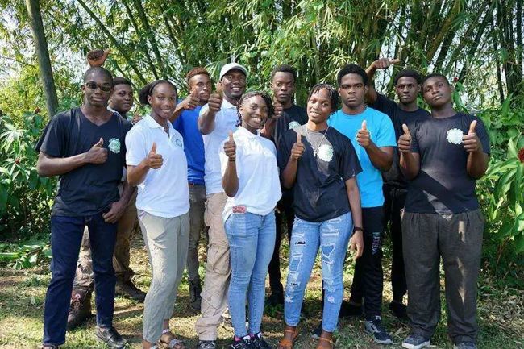

Social enterprise & skills training
360 Recycle
& Applied Design.
Material innovation and learning through making. Two initiatives founded by Scheed Cole connect recovered materials, practical skills and opportunities in Jamaican communities.
Back to AboutThe company · 360 Recycle Manufacturing
A new life
for materials.
Founded by Scheed Cole, 360 Recycle Manufacturing grew from an interest in two connected questions: what could be made from Jamaica’s discarded materials, and how could that work create opportunities for people?
Published profiles document experiments with paper, cardboard, polystyrene, plastic bottles, glass and metal. Materials were processed and combined according to the object being made, becoming sculptural forms, planters, outdoor furniture and play environments.
The challenge went beyond reusing waste. Cole wanted the finished objects to have the detail, strength and appearance expected of professionally made products. The material’s previous life became part of the method, while craftsmanship shaped what people encountered.
From experiments to environments
The Natural History Museum of Jamaica offers a documented example: its lifelike sculptural pieces were made using the recycled composite 360RM. Bark, roots, foliage and animal forms became parts of complete habitats, bringing material experimentation into an educational setting.
Explore the museum project ↗

The programme · 360 Applied Design
Learning through
real work.
Cole’s experience as an educator also shaped 360 Applied Design. The programme connects creative and technical learning with practical work, giving young people experience in disciplines including fibreglass fabrication, carpentry, welding, painting and sculpting.
A February 2024 Gleaner profile describes training at Linstead, St Catherine, where skills development was accompanied by an emphasis on attitude, discipline and work ethic. Learning a technique was part of a wider effort to build confidence and prepare people to take responsibility for their work.
A workshop with something at stake
Real commissions give those skills a purpose. The Wallabee installation at S Hotel is one example discussed in the coverage: an ambitious sculptural project brought young creatives into a team working towards a finished object at monumental scale.
In the same Gleaner feature, one participant described learning fibreglass, carpentry, welding, painting and sculpting after first approaching Cole for a summer job. Her experience shows how an introduction to the workshop could develop into a broader creative path.
Explore the Wallabee project ↗Further reading
Materials, skills
& community.
The articles below document the development of these initiatives, from early material experiments and employment in Kingston communities to practical training and sculptural commissions. The account above draws on the 2016 profiles and the 2024 feature reproduced in Scheed Cole’s dossier.
Sculptor Scheed Cole transforms lives beyond art with 360 Applied Design
Profile · Wallabee installation · Youth development
360 Recycle transforming lives from rubbish
360 Recycle
Jamaica: Homes Made from Waste? Entrepreneur Pioneers Climate-Friendly Construction
360 Recycle · Feature PDF
Women in recycling
Keisha Cole · 360 Recycle
Festival Queen launches environmentally friendly EcoMoney National Project
EcoMoney · 360 Recycle
Recycling symposium
360 Recycle · Event report
35 enterprises get ‘Buy Social’ trademark
360 Recycle · Social enterprise
Recycling Business Provides Employment for Inner-City Residents
360 Recycle · Employment
From trash to cash — recycling entrepreneur takes aim at construction industry
360 Recycle · Profile
Company founder says: ‘Manufacturing from waste materials is lucrative industry’
360 Recycle
Waste to wealth
Recycled sculpture · Photo feature
Recycling and caring heroes
National Heroes · Sam Sharpe Square · 360 Recycle